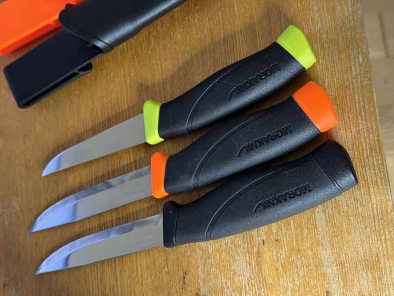
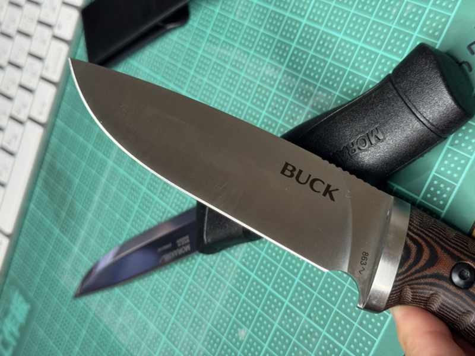

モーラナイフ購入レビュー：スカンジグラインドの魅力と4本の比較¶
最近、念願のモーラナイフを購入しました。スウェーデン製の高品質ナイフとして世界中で愛用されているモーラナイフですが、実際に使ってみてその素晴らしさを実感しています。
今回購入したのは以下の4本です：
- モーラナイフ コンパニオン フィッシング フィレ 090
- モーラナイフ コンパニオン ヘビーデューティー カーボン
- BUCK(バック) 狩猟ナイフ セルカーク Selkirk 863BRS-B
- モーラナイフ コンパニオン ヘビーデューティー ステンレス
 購入した4本のモーラナイフとBUCK狩猟ナイフ
スカンジグラインドの素晴らしさ¶
モーラナイフの最大の特徴はスカンジグラインドという刃の形状です。この独特な研ぎ方により、以下のメリットがあります：
切れ味の良さ¶
スカンジグラインドは刃の角度が浅く、非常に鋭い切れ味を実現します。木材カット、食材処理、ロープカットなど、あらゆる作業で抜群の切れ味を発揮します。
研ぎやすさ¶
最も印象的だったのは研ぎやすさです。一般的なナイフと違い、ブレードの平面をそのまま砥石に当てるだけで正確な角度で研げます。初心者でも簡単にシャープな状態を維持できます。
各ナイフのレビュー¶
1. モーラナイフ コンパニオン フィッシング フィレ 090¶
用途: 魚のフィレ専用 刃長: 約10cm 材質: ステンレススチール
- 特徴: 薄くしなやかなブレードで魚の処理に特化
- 使用感: 魚の骨に沿って正確にカットできる。キャンプでの釣り魚処理に最適
- 評価: ★★★★★
2. モーラナイフ コンパニオン ヘビーデューティー カーボン¶
用途: 重作業用 刃長: 約10.4cm 材質: カーボンスチール
- 特徴: 厚みのあるブレードで頑丈。カーボンスチールで非常に鋭い
- 使用感: 木材のバトニング、薪割り、ブッシュクラフト作業に抜群
- メンテナンス: カーボンなので錆び対策が必要だが、切れ味は最高
- 評価: ★★★★★
3. BUCK(バック) 狩猟ナイフ セルカーク Selkirk 863BRS-B¶
 BUCK セルカーク 863BRS-B - アメリカ製の信頼性の高い狩猟ナイフ
用途: 狩猟・アウトドア汎用 材質: 420HC ステンレススチール 特徴: アメリカ製の信頼性
- 使用感: モーラナイフとは異なる設計だが、同様に優秀な切れ味
- グリップ: 握りやすい形状で長時間使用でも疲れにくい
- 刃の特徴: 小刃（リカッソ）付きの伝統的なデザイン
- 研ぎ直し: 小刃部分の研ぎが少々面倒なため、ハマグリ刃風に研ぎ直し実施
- メンテナンス: 研ぎ直し後は非常にシャープで実用的な切れ味を実現
- 評価: ★★★★☆
4. モーラナイフ コンパニオン ヘビーデューティー ステンレス¶
用途: オールラウンド 刃長: 約10.4cm 材質: ステンレススチール
- 特徴: カーボン版と同じ形状だが、錆びに強いステンレス製
- 使用感: メンテナンス性とのバランスが良い。初心者におすすめ
- 評価: ★★★★☆
使用シーン別おすすめ¶
キャンプ・アウトドア初心者¶
→ コンパニオン ヘビーデューティー ステンレス 錆びにくく、メンテナンスが簡単
ブッシュクラフト・本格派¶
→ コンパニオン ヘビーデューティー カーボン 最高の切れ味と耐久性
釣り・魚料理¶
→ コンパニオン フィッシング フィレ 090 魚処理専用設計
狩猟・本格アウトドア¶
→ BUCK セルカーク アメリカ製の信頼性
まとめ¶
モーラナイフの魅力は以下の点に集約されます：
- スカンジグラインドによる抜群の切れ味
- 簡単で正確な研ぎ直し
- 用途に応じた豊富なラインナップ
- コストパフォーマンスの高さ
特に研ぎやすさは革命的で、ナイフメンテナンスの概念が変わりました。アウトドア活動をより楽しく、効率的にしてくれる素晴らしい道具です。
これからキャンプやアウトドア活動を始める方、ナイフの購入を検討している方には、ぜひモーラナイフをおすすめします。
購入先情報: 各種アウトドア用品店、Amazon等のオンラインショップで入手可能